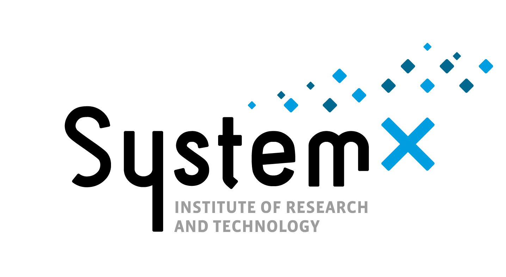
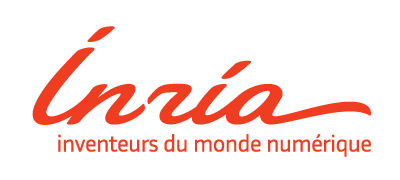

Projects
Three pieces of work I can point to in public: a clinical collaboration on epilepsy, the software behind our brain imaging labs, and an open-source geometry package. The CV has everything else.
Three pieces of work I can point to in public: a clinical collaboration on epilepsy, the software behind our brain imaging labs, and an open-source geometry package. The CV has everything else.
NYU Abu Dhabi with Cleveland Clinic Abu Dhabi
A collaboration between the MEG lab at NYU Abu Dhabi and the epilepsy team at Cleveland Clinic Abu Dhabi (CCAD).
Magnetoencephalography (MEG) measures the weak magnetic fields produced by electrical activity in the brain, millisecond by millisecond and with nothing touching the patient. In epilepsy that matters because the brief spikes that appear between seizures can be traced back to the patch of cortex producing them, which is the question a clinical team needs answered.
NYU Abu Dhabi published a feature on the project in October 2026.
A Closer Look at Epilepsy in the Brain NYU Abu Dhabi News, October 2026
NYU Abu Dhabi, since 2024
NeuroWaves is the documentation, experiment code and processing pipelines for everyone who uses the MEG and EEG labs at NYU Abu Dhabi. It sets out how brain imaging data is recorded, validated and analysed across the lab, so that results can be reproduced.
My part in it:


With Stanford and Inria, 2018 to 2022
1.5k stars on GitHub
Geomstats is a Python package for computations, statistics and machine learning on manifolds. One half is geometry: manifolds, Lie groups, fibre bundles, shape spaces and Riemannian metrics. The other half is learning algorithms for data that lives on curved spaces. It runs on NumPy, Autograd or PyTorch.
I joined as the third contributor while at IRT SystemX, and worked on:
Airbus Defence and Space. Model manager for the FCAS and EuroDrone programmes, and MBSE and simulation tutor at Airbus Academy.
IRT SystemX. Architecture of autonomous shuttle systems with RATP, SNCF, Renault and others, alongside the work on manifolds above.
CentraleSupélec. Taught modelling, requirements engineering and simulation to fourth-year engineering students.
CEA. Modelling, simulation and formal verification of hybrid dynamical systems with SMT and SAT solvers, implemented as a C++ toolchain.